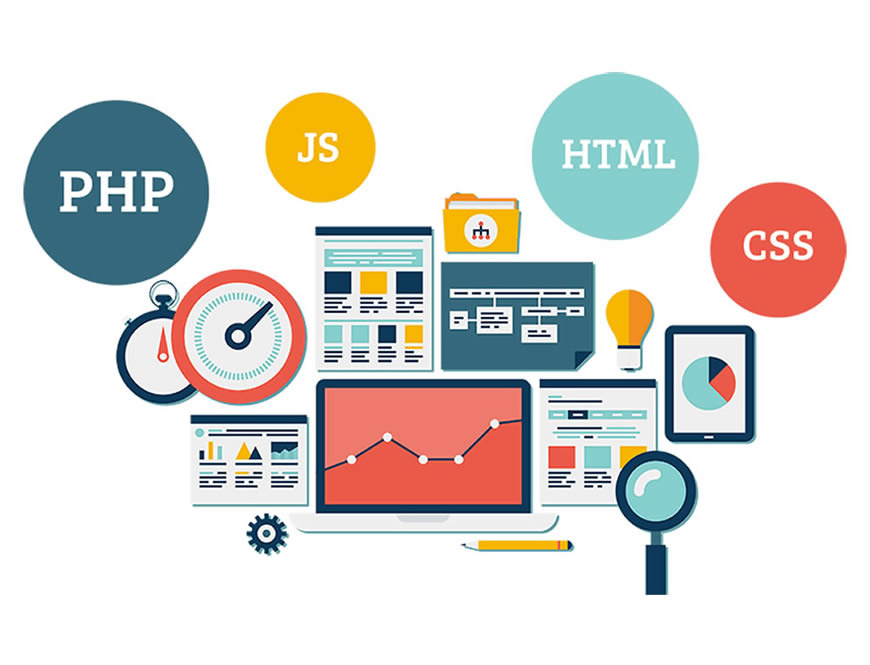

Programlama nedir?


Günlük hayatta karşılan bir problemin makineler ile çözülmesi istendiğinde öncelikle problemin gerçek hayattan soyutlanıp makineye anlatılması gerekir. Programlama, problemin tespiti ile başlayıp ürünün elde edilmesi, dağıtılması ve bakım süreçlerinin tamamını kapsayan bir süreç olarak düşünülmelidir. Bilgisayar tabanlı programlama yapabilmek için pek çok alternatif yol ve teknoloji seçilebilir. Farklı teknolojiler ve çözüm yolları kullanılarak çok çeşitli ürünler elde edilebilir.
Bu noktada programlamada kullanılan teknolojilerden ve geliştiricilerden bağımsız olarak üretilen yazılımın kullandığı çözüm yolları, algoritma ve akış şemaları ile ifade edilmelidir. Neticede geliştiriciden ve teknolojiden bağımsız, problemi ve çözüm yollarını net ifade eden bir materyalin mutlak suretle belgelendirilmesi ve elde tutulması gereklidir. Yazılımların hiç şüphesiz belirli bir ömrü olacaktır.
Teknolojinin gelişmesi, ön görülemeyen ihtiyaçlar, tasarımdan kaynaklanan hatalar, yeni talepler gibi birçok nedenden dolayı yazılımın genişleyebileceği ve bakım ihtiyacı mutlaka göz önüne alınmalıdır. Bir programcı olarak kendi makinenizde ürettiğiniz yazılımı, çocuğunuza benzetebilirsiniz. Henüz dünyaya gözlerini yeni açmış, ilk aşamada her şeyden habersiz ve savunmasız olan bir bebeğe benzeyen yazılım; üretilen algoritmalar, modüller, bileşenler ile büyür, yapılan testler, güvenlik amaçlı alınan önlemler ve kullanıcı etkileşimi ile olgunlaşır ve dağıtımının yapılması ile deyim yerindeyse yuvadan uçar ve kendi ayakları üzerine durmaya başlar. Zaman ve emek vererek büyüttüğünüz yazılım artık maddi ve manevi olarak sizi beslemeye başlar. Çok büyük firmaların ürettiği yazılımlara bakıp “Analar neler doğuyor!” diye bilirsiniz ama neticede hiçbiri kendi evladınız gibi olmaz. Programlama, oldukça ilgi çekici ve zevkli bir alan olmakla beraber ciddi derecede zaman ve emek isteyen bir süreçtir. Bu zorlu süreçte karşılaşacağız engelleri kolaylıkla aşmanızı diliyorum.
Programlamanın kullanıldığı alanlar-Nereye Yönelebiliriz?
yazılımın hangi alanlarda kullanıldığından ve nereye yönelebileceğimizden bahsedeceğim
- 1)Web tasarım ve geliştirme: Front-end ve Back-end olarak ayrılır. Front-end adından da anlaşılacağı gibi bir web sitesinin gözle görülen kısmıdır. Yani daha çok tasarım kısmı diyebiliriz. Sitenin genel görselliği , stili üzerine çalışırlar. Bu alanda daha çok; HTML, CSS ve JavaScript dilleri kullanılır. Back-end’de ise kodlama daha ağır basıyor. Sitenin genel olarak işleyişi bu kısma bağlıdır. Front-end’den veri alarak çalışmayı sağlar. Php ve ASP.NET bu alanda en çok kullanılan programlama dilleridir.
- 2) Oyun Geliştirme: Dijital bir sanat olan oyun geliştirme için en popüler 2 platform Unity ve Unreal Engine 4’tür. Unity’de daha çok C# dili kullanılırken Unreal Engine 4’te kodlamaya gerek duymadan hazırlayabileceğiniz gibi gerekiyorsa C++ ile geliştirme yapabilirsiniz.
- 3)Gömülü Sistemler: Yer aldığı sistemi akıllı hale getiren elektronik donanım ve yazılım ile oluşmuş entegre sisteme gömülü sistem denir. Yani daha çok elektronik yazılımı üzerinedir. Assembly, C , C++ kullanılır.
- 4)Masaüstü Uygulama Geliştirme: Masaüstü uygulamaları, son kullanıcının makinesi üzerinde çalışan yazılımlardır. C# ve Java en çok kullanılan dillerdir.
- 5)Mobil Uygulama Geliştirme: Bu alanda en çok kullanılan diller; Java, Swift ve Kotlin’dir. Android için; Java, Ios için Swift kullanılabilir. Kotlin ile ise her ikisinde yazabilirsiniz.
- 6) Siber Güvenlik: Bilgisayarları,sunucuları, mobil cihazları, elektronik sistemleri, ağları ve verileri kötü amaçlı saldırılardan koruma çalışmalarıdır. Bir nevi gizliliğini sağlama diyebiliriz. Bu alanda ilerlemek istiyorsanız ise Linux bilmek şart.
- 7) Veri bilimi-Makine Öğrenmesi-Yapay Zeka: Veri bilimi, yapılandırılmış ve yapılandırılmamış verilerden bilgi ve öngörü elde etmek için bilimsel yöntemleri, süreçleri, algoritmaları ve sistemleri kullanan çok disiplinli bir alandır. Makine öğrenimi, bilgisayarların algılayıcı verisi ya da veritabanları gibi veri türlerine dayalı öğrenimini olanaklı kılan algoritmaların tasarım ve geliştirme süreçlerini konu edinen bir bilim dalıdır. Yapay zeka ise bir bilgisayarın veya bilgisayar kontrolündeki bir robotun çeşitli faaliyetleri zeki canlılara benzer şekilde yerine getirme kabiliyetidir.